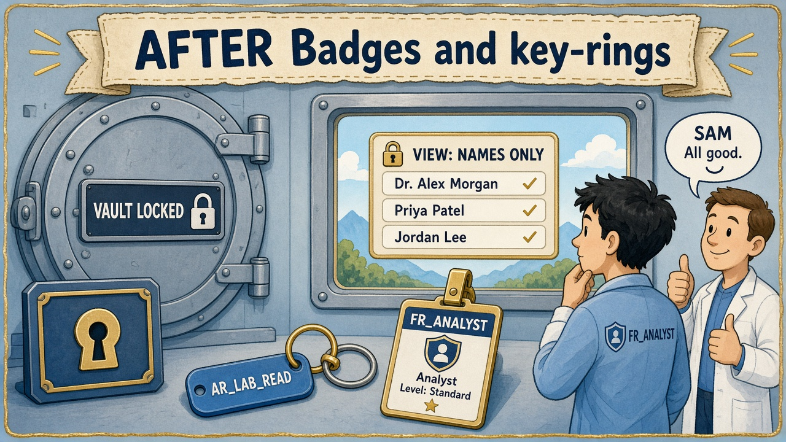

Read every Teach first section before you copy SQL.
Domain 2 starts here: who can see LAB.CUSTOMERS, and how Snowflake chains roles.
Lab 00 sample data must already exist.
1
Picture first. Look at BEFORE/AFTER → read the comic → then run tiny SQL.
If a paragraph feels heavy, skip to the next comic strip — Dev explains it out loud for you.
Business problem
Kai (analyst) needs to read customers for a board chart. Morgan refuses to give Kai
ACCOUNTADMIN or even Priya’s lab-admin badge. “One table, read-only. Prove it.”
Solution you will build
Functional roles FR_ANALYST / FR_DATA_ENGINEER, access role
AR_LAB_READ, grants: USAGE on DB/schema → SELECT on table → AR → FR.
Proof as FR_ANALYST with USE SECONDARY ROLES NONE.
Before Vault open — analysts see SSN/email.

After Badges + key-rings — vault locked, safe window.
Episode 06 · Start here
Morgan wants a chart. Sam wants a fence.
MorganManager
Kai needs customer counts by country by Friday. Don’t make them a database admin.
SamCompliance
Good. Functional role = the job badge. Access role = the key-ring of privileges. Grant keys to the badge — never hand Kai the mayor’s keys.
Picture: FR = badge on lapel · AR = ring of keys · table grants hang on the keys.
See it — don’t memorize definitions
Job badge
Functional role (FR)
Named after the human job. Users get FRs. FRs usually hold almost no direct table grants.
FR_ANALYST Kai wears this
Key-ring
Access role (AR)
Bundle of privileges (USAGE, SELECT…). Grant the AR to one or many FRs.
AR_LAB_READ SELECT on LAB tables
Chain
Table → AR → FR → User
Snowflake checks the role hierarchy. Break any link → SELECT fails.
CUSTOMERS SELECT → AR_LAB_READ → FR_ANALYST
Owner
OWNERSHIP ≠ SELECT
The role that created the table owns it (DDL, grants). Analysts need SELECT; they don’t need ownership.
Owner: ROLE_CORE_LAB_ADMIN Reader: FR_ANALYST
Grant path — name every object
1 · ContainerUSAGE on DB + schemaALPINE_RETAIL · LAB
2 · ObjectSELECT on CUSTOMERSto AR_LAB_READ
3 · BadgeGRANT AR → FRFR_ANALYST
4 · HumanGRANT FR → USERyour login
Before Step 1
Kai: “Can’t you just GRANT SELECT TO my user?”
KaiAnalyst
Why invent FR and AR? Just give me SELECT on the table.
DevCoach
Exam + real life: privileges live on roles, not on people. When Kai leaves, revoke the FR — the key-ring stays reusable for the next analyst.
1 Create FR and AR roles
What this does: Stamps three empty badges — two jobs, one key-ring. No privileges yet.
SQL · create roles
USE ROLE ROLE_CORE_LAB_ADMIN;
USE WAREHOUSE WH_CORE_XS;
USE DATABASE ALPINE_RETAIL;
CREATE ROLE IF NOT EXISTS FR_ANALYST
COMMENT = 'Alpine analyst — Kai job badge';
CREATE ROLE IF NOT EXISTS FR_DATA_ENGINEER
COMMENT = 'Alpine data engineer — Riley job badge';
CREATE ROLE IF NOT EXISTS AR_LAB_READ
COMMENT = 'Access role: SELECT on LAB practice tables';
✓ Three roles exist — SHOW ROLES LIKE 'FR_%' / 'AR_%'
Before Step 2
Why USAGE before SELECT?
RileyPeer engineer
I granted SELECT and Kai still can’t see the table. Snowflake says “does not exist or not authorized.”
DevCoach
Missing USAGE on database or schema. Snowflake won’t even walk into the room without USAGE — SELECT on the table alone isn’t enough.
2 USAGE on database and schema
What this does: Lets the key-ring enter the building (ALPINE_RETAIL) and the practice room (LAB).
SQL · USAGE grants
GRANT USAGE ON DATABASE ALPINE_RETAIL
TO ROLE AR_LAB_READ;
GRANT USAGE ON SCHEMA ALPINE_RETAIL.LAB
TO ROLE AR_LAB_READ;
✓ AR_LAB_READ can “see” the schema path
3 SELECT on CUSTOMERS → AR → FR
What this does: Hangs the SELECT key on AR_LAB_READ, then hands that key-ring to both job badges. Also grants warehouse USAGE so they can run queries.
SQL · object + role grants
GRANT SELECT ON TABLE ALPINE_RETAIL.LAB.CUSTOMERS
TO ROLE AR_LAB_READ;
GRANT ROLE AR_LAB_READ TO ROLE FR_ANALYST;
GRANT ROLE AR_LAB_READ TO ROLE FR_DATA_ENGINEER;
GRANT USAGE ON WAREHOUSE WH_CORE_XS TO ROLE FR_ANALYST;
GRANT USAGE ON WAREHOUSE WH_CORE_XS TO ROLE FR_DATA_ENGINEER;
Attach to your user — same pattern as Lab 00 (no username typing):
SQL · grant FR to you
SET uname = (SELECT CURRENT_USER());
GRANT ROLE FR_ANALYST TO USER IDENTIFIER($uname);
GRANT ROLE FR_DATA_ENGINEER TO USER IDENTIFIER($uname);
Open a new worksheet before the FR_ANALYST proof if Snowsight still hides the role.
✓ Chain complete — FR roles on your user
4 SHOW GRANTS — read the trail
What this does: Lists privileges on the table, on the AR, and which roles received the AR. Look for OWNERSHIP on the lab-admin role.
SQL · inspect grants
SHOW GRANTS ON TABLE ALPINE_RETAIL.LAB.CUSTOMERS;
SHOW GRANTS TO ROLE AR_LAB_READ;
SHOW GRANTS TO ROLE FR_ANALYST;
SHOW GRANTS OF ROLE AR_LAB_READ;
✓ See OWNERSHIP (lab admin) + SELECT (AR_LAB_READ)
Before the proof
Snowsight secondary roles will lie to you
PriyaYou
I switched to FR_ANALYST in the UI and I can still do everything lab admin can. Is RBAC broken?
DevCoach
Secondary roles are still on. Run USE SECONDARY ROLES NONE after every FR switch or your “proof” is fake. See SNOWSIGHT_GOTCHAS.
5 Proof as FR_ANALYST (secondary roles NONE)
What this does: Proves the analyst badge alone can SELECT. Run in a separate worksheet — do not Run All past the role switch.
SQL · analyst proof
USE ROLE FR_ANALYST;
USE SECONDARY ROLES NONE;
USE WAREHOUSE WH_CORE_XS;
USE DATABASE ALPINE_RETAIL;
SELECT CURRENT_ROLE(), CURRENT_SECONDARY_ROLES();
SELECT CUSTOMER_ID, FULL_NAME, COUNTRY
FROM LAB.CUSTOMERS
ORDER BY CUSTOMER_ID
LIMIT 5;
Cannot proof (optional)
As lab admin: REVOKE ROLE AR_LAB_READ FROM ROLE FR_ANALYST;
Then re-run the proof — expect insufficient privileges. Re-grant when done.
6 Future grants (awareness)
What this does: New tables created later in LAB automatically get SELECT for AR_LAB_READ — so you don’t re-grant every time.
SQL · future grants
USE ROLE ROLE_CORE_LAB_ADMIN;
GRANT SELECT ON FUTURE TABLES IN SCHEMA ALPINE_RETAIL.LAB
TO ROLE AR_LAB_READ;
SHOW FUTURE GRANTS IN SCHEMA ALPINE_RETAIL.LAB;
✓ Future SELECT listed for AR_LAB_READ
Exam presses further — say these out loud
Basics got you the badges. Cover each answer before you open it.
Q1. Functional role vs access role — which holds SELECT on the table?
Say: Access role (AR_*) holds object privileges. Functional role (FR_*) is the job badge granted to users; it inherits ARs. Exam likes “privileges on AR, people on FR.”
Q2. What does OWNERSHIP transfer change — and what stays?
Say: New owner controls DDL and who else gets grants. Use GRANT OWNERSHIP … COPY CURRENT GRANTS so existing privileges don’t vanish. Ownership ≠ automatic SELECT for every role.
Q3. Why use FUTURE GRANTS?
Say: So new tables/views in a schema inherit privileges without manual re-grants. Without them, yesterday’s AR works on old tables and silently fails on new ones.
Q4. Why do secondary roles break privilege proofs?
Say: Snowsight often keeps ROLE_CORE_LAB_ADMIN (or ACCOUNTADMIN) as a secondary. Privileges union across primary + secondary. USE SECONDARY ROLES NONE isolates the FR you’re testing.
Q5. You granted SELECT on the table but forgot USAGE on the schema. What happens?
Say: Query fails with not authorized / object not found. Container USAGE (database + schema) is required before object privileges apply. Same for warehouse USAGE to run compute.
Priya’s wrap-up (say this out loud)
“Kai needed read access without becoming admin. I created FR_ANALYST and AR_LAB_READ, granted USAGE on ALPINE_RETAIL and LAB,
SELECT on LAB.CUSTOMERS to the access role, then the AR to the FR. I proved it with USE SECONDARY ROLES NONE so lab-admin powers couldn’t cheat.
Outcome: least-privilege analyst access, grant trail visible in SHOW GRANTS, ready for auth Lab 07.”
Next
Lab 07 — how humans and services authenticate (MFA, SSO, keys, network policies).